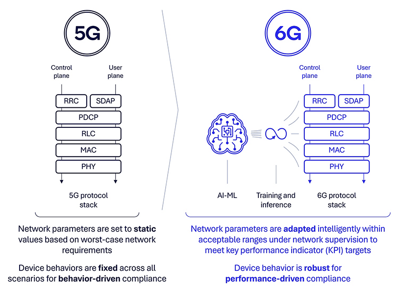
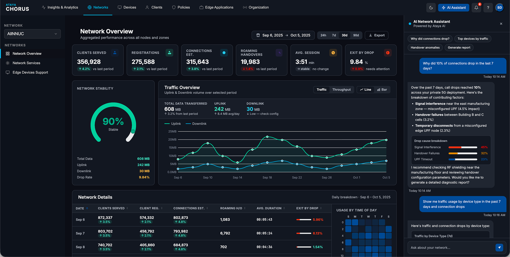
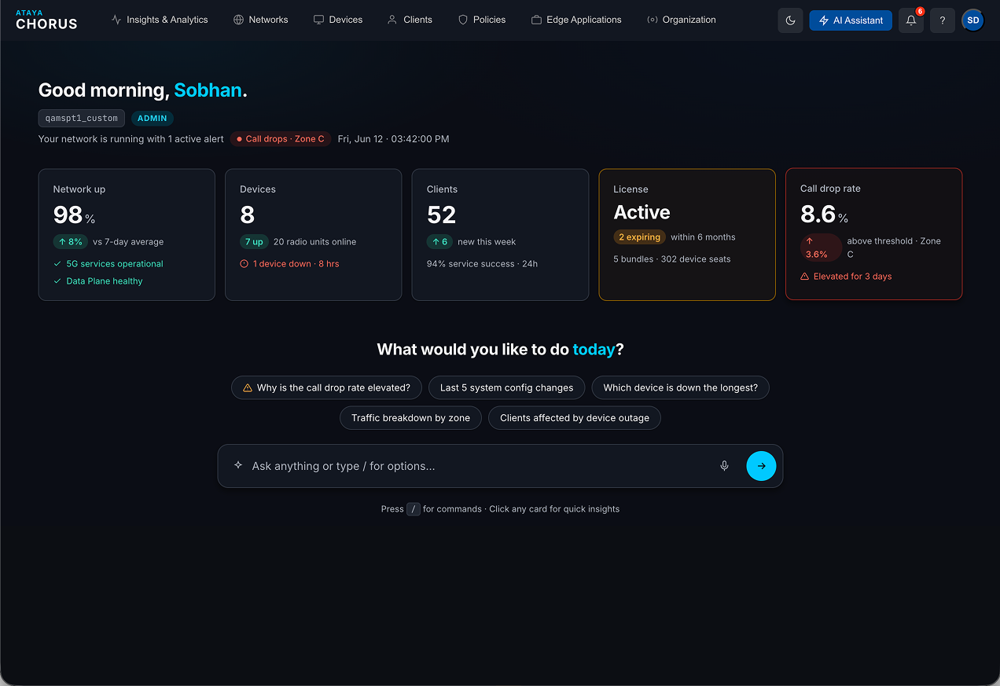
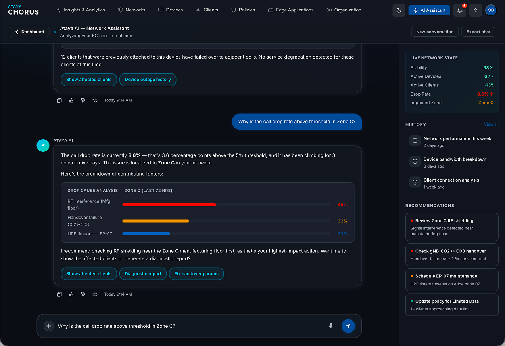
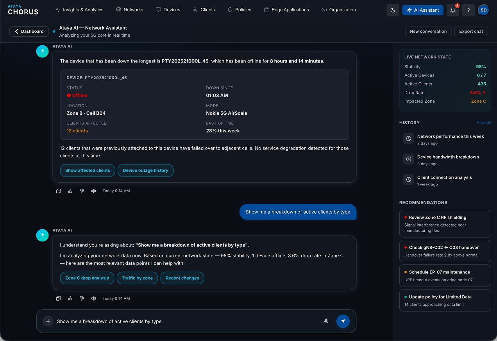
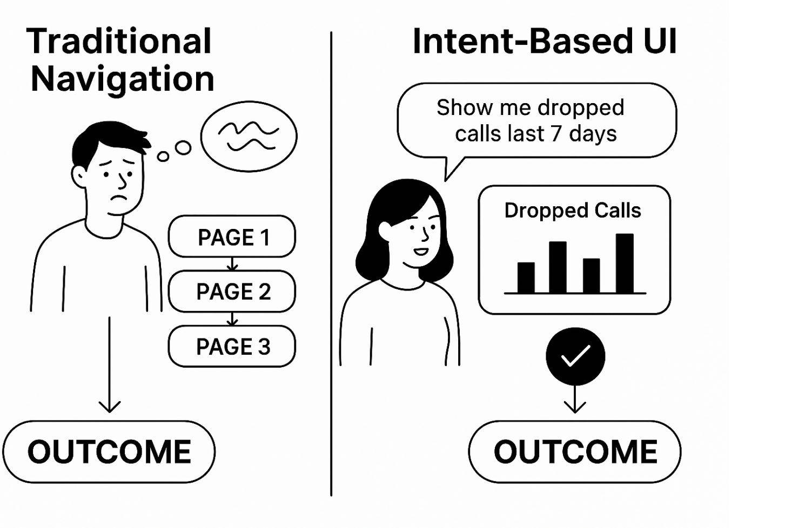

Case Study
Accelerating to AI-First UX
AI-Native UX
6G / 5G
Conversational UI
Intent Design
NWDAF
AI at the Core: Designing an Intent-Driven Assistant for the 6G Network Era
In 6G, AI won't just support the network — it will be woven into its very fabric. This "AI-native" approach means intelligence is embedded directly into how the network controls, manages, and processes data. For operators and engineers, this changes everything: the interface is no longer a dashboard full of dials and tables. It's a reasoning system that understands intent.
This case study documents the design challenge of building an AI assistant for enterprise network management — where the stakes are high, the users are experts, and the goal is to make complexity disappear without hiding what matters.
The work involved rethinking what "UX" means when the primary interface is a conversation, and how to design for a system that thinks rather than just responds.
Context
Why AI-native networking demands a new UX model
The 6G era introduces a fundamental shift in how networks operate. Technologies like NWDAF (Network Data Analytics Function) and closed-loop automation mean the network is continuously learning, predicting, and self-optimising — without waiting for a human to notice something is wrong and log a ticket.
Traditional network management UX was built for a reactive world: operators watch dashboards, spot anomalies, and manually intervene. When the network starts making decisions autonomously, that mental model breaks. The interface needs to shift from "here is what happened" to "here is what the system is doing, why, and what you need to decide."
"The network is smarter than the dashboard. The UX needs to close that gap."

From 5G to 6G — AI becomes native infrastructure, not a feature bolt-on
ataya.io / chorus / network-overview
Ataya Chorus — Network Overview dashboard with AI assistant, live charts, and heatmap analytics
The Challenge
Redesigning UX for AI at the core
When AI becomes the primary actor in a system — not just a recommendation engine — the UX designer's job changes fundamentally. You're no longer designing screens for humans to click. You're designing the communication layer between a reasoning system and the humans who are ultimately accountable for its decisions.
The core tensions: operators need to trust AI recommendations without becoming passive. They need to retain expertise without drowning in raw data. And when the AI is wrong or uncertain, the interface must surface that honestly — not hide it behind a confident-sounding response.
We approached this by designing from the operator's goals outward, rather than from the system's capabilities inward. What does a network engineer actually need to accomplish in their day? How does AI change what's hard versus what's easy?




The product surface — redesigned around AI-native workflows and intent-driven navigation
Research
What does the user really need?

User needs mapping — from task-based research with network engineers and operations managers
We ran structured research with two distinct user groups: network engineers who understand the technical infrastructure deeply, and operations managers who are responsible for outcomes but don't want (or need) to know how NWDAF works.
The pattern that emerged: both groups described their needs in terms of goals, not features. "I need to know if the network is performing well for our key tenants." "I need to understand why that alarm fired and whether I need to do anything." Nobody said "I need a graph of throughput over time."
This confirmed the design direction: the assistant interface should be intent-driven and goal-focused, not data-centric. The system should understand what the operator is trying to accomplish and surface exactly what they need — nothing more.
Intent-driven
Operators state goals, not queries. The system figures out what data to pull.
Goal-focused
Every surface asks: what is the operator trying to accomplish right now?
Expert-appropriate
The system doesn't dumb things down — it surfaces the right level of detail for the role.
Feature Design
The entry point: detecting intent before the question is asked
The assistant interface needed to feel like a genuine expert colleague — not a search bar, not a form, not a chatbot. The challenge was designing an entry point that signals capability without creating anxiety about "how do I phrase this?" for operators who are used to clicking buttons.
We designed a contextual assistant that pre-loads relevant context based on what the operator is currently viewing. If they're looking at a specific site's performance, the assistant already knows the site, the current status, and the last 24 hours of events — so they can ask "why is throughput low this afternoon?" without having to specify which site, which metric, or which time window.
The AI assistant — contextual, minimal, and designed to understand goals rather than parse commands
Interaction Design
Ask for what you need — conversational, smart, minimal
The conversational interface is deliberately minimal. There are no mode-switching buttons, no "advanced search" toggles, no dropdown for query type. The system handles the complexity; the operator's job is to say what they need.
Under the surface, the assistant routes queries to the right data source — real-time network telemetry, historical analytics, policy configuration, event logs — and synthesises a response that directly answers the question, with the evidence embedded. When the answer involves data the operator should verify, the assistant surfaces the underlying metrics inline.
We invested heavily in the response design: how answers are structured, when to show supporting charts, how to handle uncertainty, and how to offer "next step" actions that keep the operator moving forward rather than starting a new query from scratch.

Assistant response with inline analytics — evidence embedded directly in the conversation
Design Principles
Designing behavior, not just screens
AI-native UX requires a new design vocabulary. When the system can act — not just display — every design decision has higher stakes. We developed four core principles that governed every design decision throughout the project.

Build trust early
Start with high-confidence, low-stakes interactions. Let operators verify the system is right before they rely on it for critical decisions.

Shape behavior through design
The way the assistant communicates shapes how operators think about the network. Design responses that build accurate mental models, not comfortable ones.

Plan for failure
The AI will be wrong. Design for graceful failure — clear uncertainty signals, easy correction, and no hiding behind confident language when confidence is low.

Close the loop
Every AI-initiated action should complete a feedback cycle — operators should know what the system did, why, and what the outcome was. No silent background changes.
System Thinking
Beyond visual design — designing the AI's judgment
In AI-native products, the most important design decisions aren't visual — they're about what the system decides to do, say, and prioritise. Designing the assistant required working closely with the AI/ML team to define the system's communication style, its escalation logic, and the criteria for when to act autonomously versus when to ask for confirmation.
This meant writing detailed behavior specifications alongside the UI designs: how the assistant should express uncertainty, what language signals high versus low confidence, when to surface a recommendation versus when to execute and report, and how to handle edge cases where the system's model conflicts with what the operator is seeing on the ground.
The design artefact that mattered most for this work wasn't a Figma file — it was a behavior document that the entire team aligned on before a single component was built.

Behavior specifications — defining the AI's judgment alongside the visual design
Foundation
Design system for AI-native interfaces
Building an AI-native product required extending the existing design system with a new vocabulary of components specifically for AI interactions — confidence indicators, action confirmation patterns, inline evidence blocks, uncertainty states, and the feedback loop UI for autonomous actions.
These components needed to be distinct enough to signal "the AI is involved here" while remaining visually consistent with the rest of the product. We used a restrained AI visual language — subtle colour shifts, specific typography treatment for AI-generated content, and clear iconography for AI actions — that respects operator expertise rather than anthropomorphising the system.

AI design system — new components for confidence, confirmation, inline evidence, and autonomous action feedback
Reflection
Looking forward
4
core behavior principles
∞
design challenges ahead
This project has fundamentally changed how I think about UX design. When AI becomes the interface — not just a feature within it — the designer's role expands into territory that blends product strategy, behavioral psychology, and systems thinking.
The questions that kept me up at night weren't about colour or layout. They were about accountability: when an AI system acts autonomously in a high-stakes environment, how do we design for the human remaining in meaningful control? How do we prevent operators from becoming passive monitors of a system they no longer fully understand?
These are the defining design problems of the next decade, and I'm proud to be working on them at the frontier of where AI meets critical infrastructure.
 2025
2025